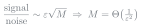

<!-- Slide 10: noise versus phase.  One slider for M drives both panels; the
     two equations are one press away, after the slider has been dragged.
     Keys [ and ] also move the slider.  See assets/noise-vs-phase.js. -->
<div class="l2-fig">
<svg id="noise-vs-phase-fig" viewBox="0 0 760 312" width="980"></svg>
</div>
<div class="step" style="display:flex; justify-content:center; gap:6vw; margin-top:0.2em;">
  
  
</div>
<script src="../assets/noise-vs-phase.js" defer></script>
